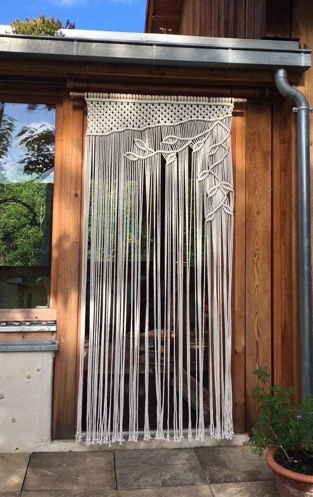
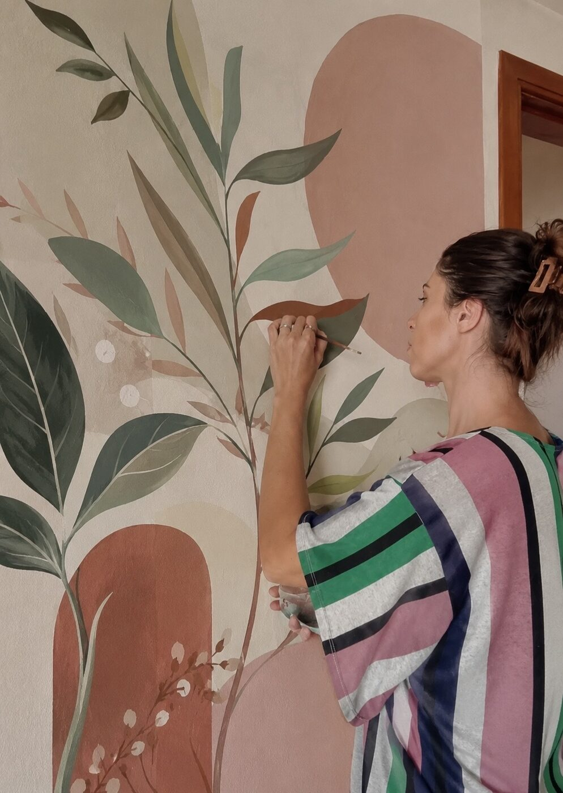
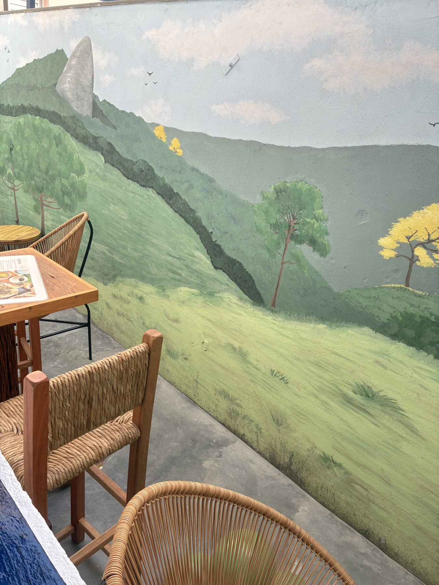
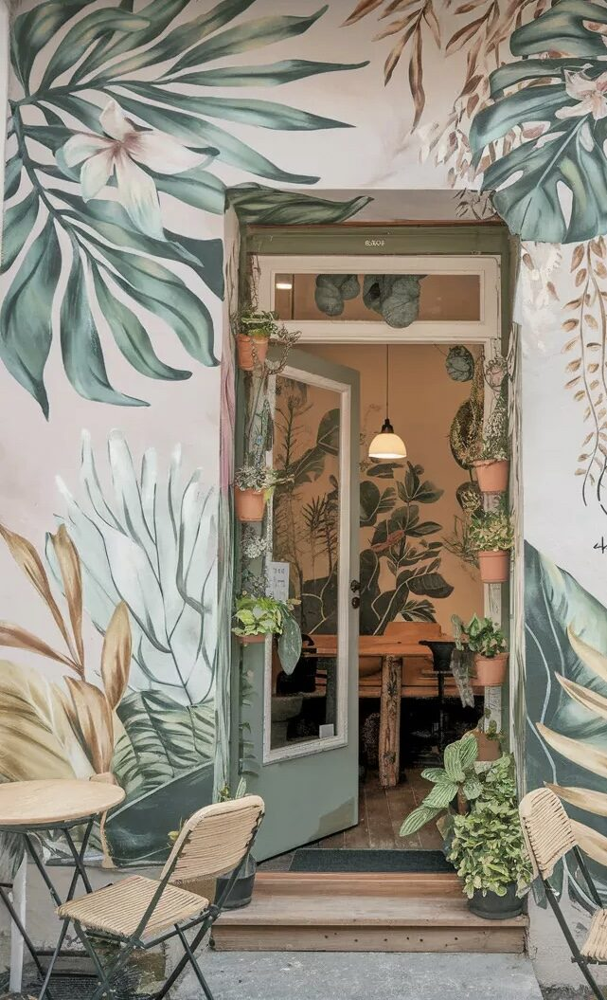
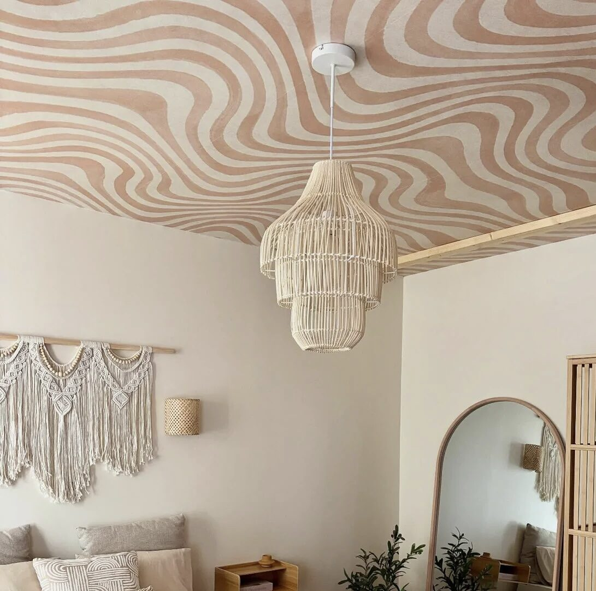
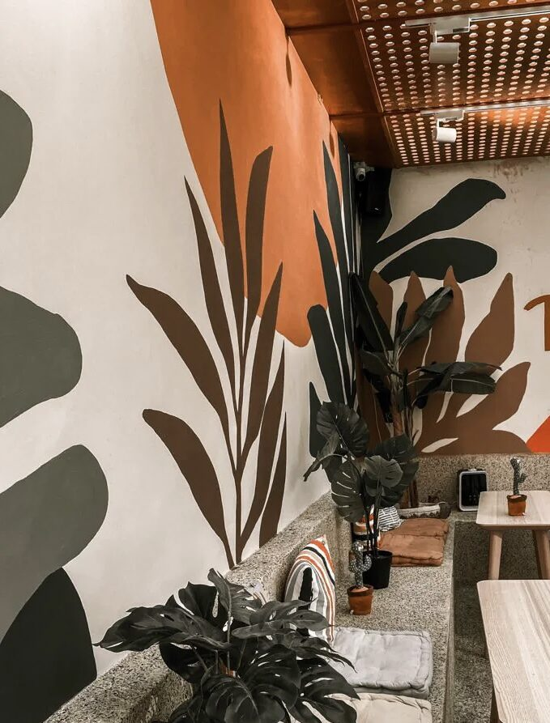
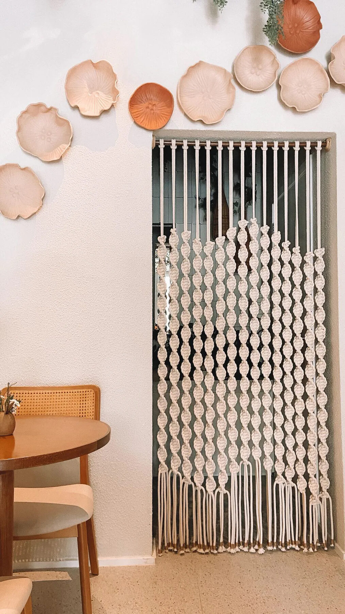
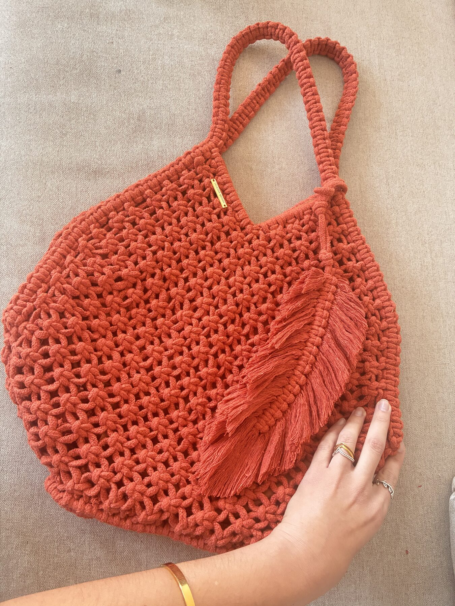

Murais
Pintura mural autoral para projetos comerciais e residenciais.
- Fachadas e áreas externas
- Ambientes internos
- Pousadas, cafés, restaurantes, lojas, estúdios e imóveis para Airbnb
- Projetos exclusivos e personalizados
Sou Giovanna Peres, artista à frente da D'Arte Maris. Crio murais autorais e peças em macramê para espaços que pedem presença, textura e identidade.


A D'Arte Maris nasceu do desejo de transformar ambientes em espaços acolhedores e autênticos. Movida pelo amor ao oceano, encontrei em Garopaba um lugar onde a arte dialoga com a paisagem e valoriza espaços singulares. Desenvolvo murais autorais e peças em macramê que unem arte, design e a inspiração da natureza.
Cada projeto é concebido para integrar-se ao ambiente de forma sensível, revelando sua identidade e convidando à contemplação.
Pintura mural autoral para projetos comerciais e residenciais.
Peças feitas à mão para acrescentar textura, movimento e materialidade ao ambiente.
Uma seleção de pinturas e peças desenvolvidas artesanalmente.
Cores, formas e paisagens pensadas para transformar ambientes em lugares com identidade.




Peças feitas à mão, com fibras naturais e detalhes que aquecem o espaço e a imagem.


Você entra em contato pelo WhatsApp e me conta sua ideia. Pode ser uma referência, uma atmosfera que deseja criar ou simplesmente um espaço esperando ganhar vida.
Conversamos sobre o ambiente, suas inspirações e a atmosfera que você deseja criar. A partir disso, desenvolvo uma proposta pensada especialmente para esse espaço.
Você recebe uma proposta com investimento, prazo e condições de pagamento. Após a aprovação e o pagamento de 50% do valor, o projeto é confirmado e sua data é reservada.
Na data prevista, inicio a criação da obra. Durante o processo, compartilho registros do desenvolvimento para quem desejar acompanhar.
A obra é finalizada e, quando necessário, instalada no local. Um último cuidado para que tudo esteja exatamente como foi pensado.
Cada etapa é combinada com clareza, desde a proposta até a entrega da obra.
A natureza inspira cada criação, dando origem a obras que se integram ao ambiente com leveza e valorizam sua atmosfera e identidade.
Cada nó e cada pincelada são realizados manualmente, com atenção aos detalhes e ao acabamento.
Dimensões, composição e linguagem são pensadas de acordo com o ambiente.
"Não me canso de admirar minha paisagem favorita, agora na nossa janela"
Tassia Dias Mello — Arte Mural — Cambuí
"Estou encantada com seu trabalho... transformou o ambiente"
Lauren Maria Ferreira — Cortina de Macramê — Camanducaia
"Ficou perfeito, amamos cada detalhe"
Auane Angielli — Painel de Macramê — Garopaba
Se você tem uma parede, um ambiente ou um projeto em mente, me conte o que está imaginando.
Solicitar um projeto